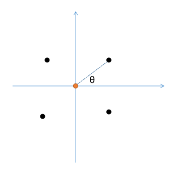

FAST-Calib-04 外参求解部分
本项目介绍
- FAST-Calib已经开源了代码，其基于ROS实现。为了方便使用，本项目将FAST-Calib的ROS依赖去除，可以直接在非ROS环境下进行编译使用，直接保存标定结果及各种可视化数据。方便各位在业务或者实验室项目中使用。
- 对FAST-Calib算法的各个步骤进行详细说明，介绍一些实际使用中可能遇到的问题。对论文中没有说明的步骤和要求进行补充。主要也是对自己学习FAST-Calib的一个总结。
- 希望能在FAST-Calib基础上，进一步优化算法，提高自动化。
前情提要
在前两篇文章中，我们介绍了FAST-Calib标定流程中的两个部分：1. 从点云提取标定板4圆孔3d点；2. 从图像中计算标定板4圆孔中心点在相机坐标系下的3的坐标。本文将介绍如何将这两个步骤的结果进行融合，求解相机和LiDAR的外参。
我们令激光雷达坐标系下的圆孔中心点为：
\[ \mathbf{P}_{\text{L}} = \mathbf{p}_L^i, i = 1, 2, 3, 4 \]
相机坐标系下的圆孔中心点为：
\[ \mathbf{P}_{\text{C}} = \mathbf{p}_C^i, i = 1, 2, 3, 4 \]
我们的求解目标是找到相机坐标系和激光雷达坐标系之间的变换矩阵 \(\mathbf{T}_{\text{C}}^\text{L}\)，使得所有点对的变换误差最小化。通常，我们用最小二乘误差
\[ \mathbf{T}_{\text{C}}^\text{L} = \arg \min_{\mathbf{T}_{\text{C}}^\text{L}} \sum_{i=1}^4 \|\mathbf{p}_L^i - \mathbf{T}_{\text{C}}^\text{L} \mathbf{p}_C^i\|^2 \]
圆孔中心点排序对齐
排序方法
为了求解上述的最小二乘问题，我们需要有对应的点对。前面提取到的点云坐标系和相机坐标系下的圆孔中心点，并不一定是一一对应的。因此，我们需要利用一些几何约束条件，将两个坐标系下的点按照一定的顺序排序，这样，排序后的点就是一一对应的。
这里使用的排序算法其实非常简单，这里假设标定板的摆放方向是基本横平竖直的，跟传感器的坐标轴差不多对齐，不能超过45度。这样，将4个圆孔中心点直接投到XY平面，然后计算每个点与x轴正方向的夹角，然后按照夹角从小到大排序，这样得到的顺序就是从右上角开始，逆时针排序。
由于LiDAR的坐标系是前x，左y，上z，相机坐标系是右x，下y，前z，因此，这里在排序前，会先将LiDAR坐标系定义方式做一定转换，使得其与相机坐标系对齐。
1 | // Coordinate transformation (LiDAR -> Camera) |
图示如下

限制/排序的假设
虽然上述的排序方法看起来很简单，但实际上隐含着两个限制：
- 标定板不是随意摆放，只能尽量横平竖直的摆放，即长边要么平行于地面，要么垂直于地面。如果标定板倾斜角度在45度附近，LiDAR和相机又有一个roll角的相对旋转，那么按照上述的排序方法，可能无法得到正确的排序结果。
- LiDAR和相机的相对旋转角度不能太大。最简单的反例，如果LiDAR是倒转的，那么按照上述的排序方法，得到的LiDAR圆孔中心点顺序就应该是从左下角开始，逆时针排序。
其他方法
上述的排序方法有一定限制，在实际应用中也许会出错。是否有其他方法？
在相机坐标系下的圆孔中心顺序实际上应该是已知的，因为标定板的位姿已知，我们是可以得到4个圆孔具体是怎样排序的。
那么，在实际的应用中，我们一般会有一个LiDAR到相机的一个初始外参，利用这个外参，把LiDAR坐标系下的圆孔中心点投影到相机坐标系下，然后从相机坐标系下的点找最近点，这样可以得到一个配对结果。但是这样的方法也会受初始外参影响，如果初始外参很不准，那么这个最近点的配对也会出错。
外参求解
代码
从一组3d点对，求解变换矩阵，虽然里面的数学推导需要十几行，不过在代码中，我们只需要3行：
1 | // 直接使用SVD计算求解变换矩阵 |
SVD求解变换矩阵
问题定义
我们有两组对应的3D点集： - 源点集： \(P = \{\mathbf{p}_1, \mathbf{p}_2, ..., \mathbf{p}_n\}\) ，其中 \(\mathbf{p}_i \in \mathbb{R}^3\) - 目标点集： \(Q = \{\mathbf{q}_1, \mathbf{q}_2, ..., \mathbf{q}_n\}\)，其中 \(\mathbf{q}_i \in \mathbb{R}^3\)
我们知道每一个 \(\mathbf{p}_i\) 都对应一个 \(\mathbf{q}_i\)。
存在一个刚性变换，使得： \[ \mathbf{q}_i = R \mathbf{p}_i + \mathbf{t} + \mathbf{\epsilon}_i \] 其中： - \(R\) 是一个 \(3 \times 3\) 的旋转矩阵（满足 \(R^T R = I\)，且 \(\text{det}(R) = 1\)）。 - \(\mathbf{t}\) 是一个 \(3 \times 1\) 的平移向量。 - \(\mathbf{\epsilon}_i\) 是噪声或误差项。
我们的目标是找到 \(R\) 和 \(\mathbf{t}\)，使得所有点对的变换误差最小化。通常，我们最小化最小二乘误差： \[ (R^*, \mathbf{t}^*) = \arg\min_{R, \mathbf{t}} \sum_{i=1}^{n} \| (R \mathbf{p}_i + \mathbf{t}) - \mathbf{q}_i \|^2 \]
SVD求解原理与过程
这个方法的核心思想是将旋转和平移的解耦。通过巧妙地处理点集的中心，我们可以先独立地求解旋转，然后再求解平移。
步骤1：计算点集的中心
首先，我们计算源点集和目标点集的中心（质心）：
\[ \mathbf{\mu}_p = \frac{1}{n} \sum_{i=1}^{n} \mathbf{p}_i \] \[ \mathbf{\mu}_q = \frac{1}{n} \sum_{i=1}^{n} \mathbf{q}_i \]
步骤2：将点集中心化
然后，我们将每个点减去其所在点集的中心，得到去中心化的坐标：
\[ \mathbf{x}_i = \mathbf{p}_i - \mathbf{\mu}_p \] \[ \mathbf{y}_i = \mathbf{q}_i - \mathbf{\mu}_q \]
这个步骤是关键，因为它将平移分量吸收到了中心点中。现在，我们的优化问题可以改写为：
\[ (R^*, \mathbf{t}^*) = \arg\min_{R, \mathbf{t}} \sum_{i=1}^{n} \| (R (\mathbf{x}_i + \mathbf{\mu}_p) + \mathbf{t}) - (\mathbf{y}_i + \mathbf{\mu}_q) \|^2 \]
步骤3：解耦平移项
我们可以证明，最优的平移向量 \(\mathbf{t}\) 与旋转 \(R\) 无关，并且由两个点集的中心直接给出：
\[ \mathbf{t} = \mathbf{\mu}_q - R \mathbf{\mu}_p \]
推导如下： 将目标函数对 \(\mathbf{t}\) 求导并令其为零： \[ \frac{\partial}{\partial \mathbf{t}} \sum_{i=1}^{n} \| R \mathbf{p}_i + \mathbf{t} - \mathbf{q}_i \|^2 = 0 \] \[ \Rightarrow 2 \sum_{i=1}^{n} (R \mathbf{p}_i + \mathbf{t} - \mathbf{q}_i) = 0 \] \[ \Rightarrow n\mathbf{t} = \sum_{i=1}^{n} (\mathbf{q}_i - R \mathbf{p}_i) \] \[ \Rightarrow \mathbf{t} = \frac{1}{n} \sum_{i=1}^{n} \mathbf{q}_i - R \frac{1}{n} \sum_{i=1}^{n} \mathbf{p}_i = \mathbf{\mu}_q - R \mathbf{\mu}_p \]
将 \(\mathbf{t} = \mathbf{\mu}_q - R \mathbf{\mu}_p\) 代回原目标函数，新的优化问题变为只关于 \(R\)：
\[ R^* = \arg\min_{R} \sum_{i=1}^{n} \| R \mathbf{x}_i - \mathbf{y}_i \|^2 \]
其中 \(\mathbf{x}_i\) 和 \(\mathbf{y}_i\) 是去中心化的坐标。现在，我们只需要求解旋转矩阵 \(R\)。
步骤4：通过SVD求解旋转矩阵 \(R\)
展开旋转部分的代价函数： \[ \sum_{i=1}^{n} \| R \mathbf{x}_i - \mathbf{y}_i \|^2 = \sum_{i=1}^{n} (R \mathbf{x}_i - \mathbf{y}_i)^T (R \mathbf{x}_i - \mathbf{y}_i) \] \[ = \sum_{i=1}^{n} (\mathbf{x}_i^T R^T R \mathbf{x}_i - 2 \mathbf{y}_i^T R \mathbf{x}_i + \mathbf{y}_i^T \mathbf{y}_i) \]
因为 \(R\) 是旋转矩阵，有 \(R^T R = I\)，所以上式简化为： \[ = \sum_{i=1}^{n} (\mathbf{x}_i^T \mathbf{x}_i - 2 \mathbf{y}_i^T R \mathbf{x}_i + \mathbf{y}_i^T \mathbf{y}_i) \]
为了最小化这个表达式，我们只需要最大化以下项： \[ \sum_{i=1}^{n} \mathbf{y}_i^T R \mathbf{x}_i = \text{Trace} \left( \sum_{i=1}^{n} R \mathbf{x}_i \mathbf{y}_i^T \right) = \text{Trace}(R H) \]
其中 \(H\) 是一个 \(3 \times 3\) 的矩阵，由去中心化的点集计算得出： \[ H = \sum_{i=1}^{n} \mathbf{x}_i \mathbf{y}_i^T = \sum_{i=1}^{n} (\mathbf{p}_i - \mathbf{\mu}_p)(\mathbf{q}_i - \mathbf{\mu}_q)^T \]
现在，问题转化为： \[ R^* = \arg\max_{R} \text{Trace}(R H) \]
步骤5：对矩阵 \(H\) 进行SVD
对矩阵 \(H\) 进行奇异值分解： \[ H = U \Sigma V^T \] 其中 \(U\) 和 \(V\) 是 \(3 \times 3\) 的正交矩阵，\(\Sigma\) 是由奇异值组成的对角矩阵。
步骤6：计算最优旋转矩阵 \(R\)
可以证明，使得 \(\text{Trace}(R H)\) 最大的旋转矩阵 \(R\) 为： \[ R = V U^T \]
但这里有一个重要的特殊情况需要处理：如果 \(\text{det}(R) = -1\)（即 \(R\) 是一个反射而不是旋转），这意味着我们找到的解是“ Improper Rotation ”。在三维空间中，一个有效的旋转矩阵其行列式必须为 +1。
修正方法： 如果 \(\text{det}(V U^T) = -1\)，我们需要对解进行修正。将 \(V\) 矩阵的第三列（对应最小奇异值）取反，然后重新计算 \(R\)： \[ R = V' U^T \] 其中 \(V' = [v_1, v_2, -v_3]\)，\(v_1, v_2, v_3\) 是 \(V\) 的列向量。
这个修正确保了 \(R\) 是一个真正的旋转矩阵（行列式为+1）。
步骤7：计算平移向量 \(t\)
在得到最优的旋转矩阵 \(R\) 后，我们利用步骤3中推导的公式计算平移向量： \[ \mathbf{t} = \mathbf{\mu}_q - R \mathbf{\mu}_p \]
总结
通过以上步骤，我们利用SVD方法求得了两组3D点集之间的最优刚性变换：
- 计算中心： \(\mathbf{\mu}_p\)， \(\mathbf{\mu}_q\)。
- 中心化点集： \(\mathbf{x}_i = \mathbf{p}_i - \mathbf{\mu}_p\)， \(\mathbf{y}_i = \mathbf{q}_i - \mathbf{\mu}_q\)。
- 计算矩阵 \(H\)： \(H = \sum \mathbf{x}_i \mathbf{y}_i^T\)。
- 对 \(H\) 进行SVD： \(H = U \Sigma V^T\)。
- 计算旋转矩阵 \(R\)： \(R = V U^T\)。如果 \(\text{det}(R) = -1\)，将 \(V\) 的第三列取反后再计算。
- 计算平移向量 \(\mathbf{t}\)： \(\mathbf{t} = \mathbf{\mu}_q - R \mathbf{\mu}_p\).
最终，对于任何一个源点 \(\mathbf{p}\)，其变换到目标点集的坐标可以通过 \(\mathbf{q} = R \mathbf{p} + \mathbf{t}\) 计算得到。这个方法在存在噪声的情况下仍然能给出最优的最小二乘解，是计算机视觉和机器人领域中一个非常经典和重要的算法。